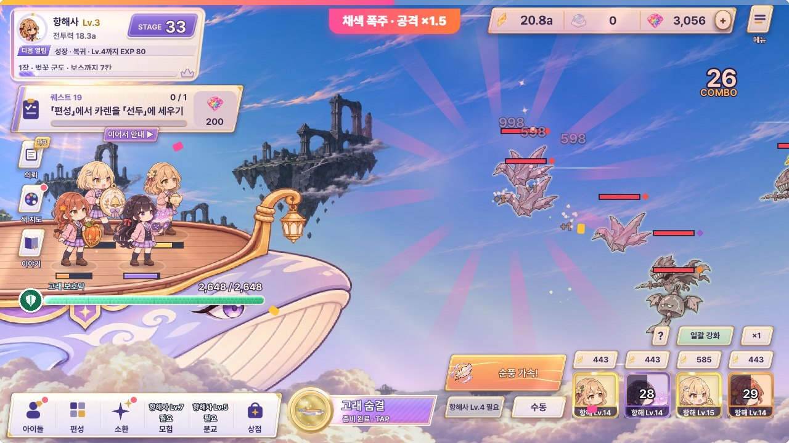
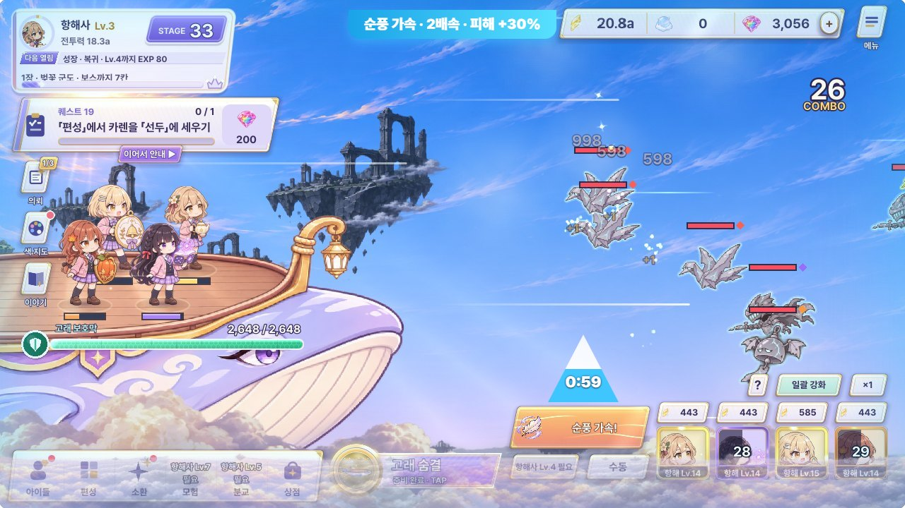
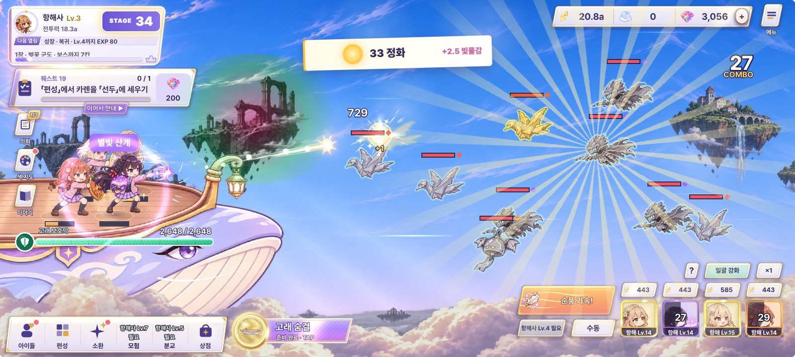
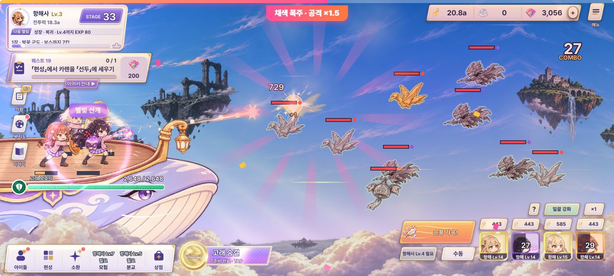
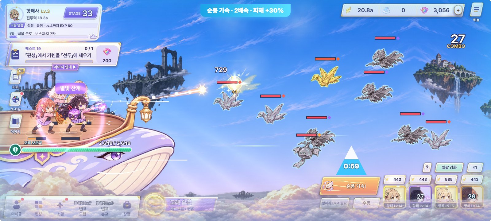

정화 · 채색 폭주 · 순풍 가속 B 「하늘 날씨」 — 수정 시안 (#15 · #17 · #30)
PD가 고른 B 하늘 날씨를 다듬은 판입니다. 세 순간을 서로 다른 날씨로 나눴습니다: 정화 = 햇살(금 · 흰빛, 위에서 아래로 열리는 빛), 채색 폭주 = 무지개 소나기(프리즘 무지개 · 자홍, 8초), 순풍 가속 = 하늘빛 바람(하늘색 · 흰 바람 띠가 가로로 흐름, 60초). 빛 · 입자 · 그라데이션을 여러 겹으로 쌓았고(게임에서는 전체 화면 셰이더 1장 + 입자 1~2개 정도), 전투 한가운데(고래 ~ 적 사이)는 가리지 않습니다. 바탕은 지금 전투 캡처(STAGE 33)이고 수치는 지금 게임 값입니다(첫 정화 빛물감 +2.5, 폭주 8초 · 공격력 ×1.5, 순풍 60초 · 2배속 · 피해 +30%).
지금 게임
정화 · 폭주 · 순풍이 모두 가운데 같은 모양의 판으로 떠서 서로 구별이 잘 안 되고 전투를 가립니다.
원래 시안 B (비교용)
햇살 빛살 + 쪽지 / 자홍 빛살 + 위 띠 / 바람 줄 + 삼각 돛. 셋 다 같은 「가운데에서 퍼지는 빛살」이라 겹쳐 보였고, 빛이 한 겹이라 납작했습니다. 움직이는 원본: feedback70/clear_fever/index.html





1. 스테이지 정화 — 햇살이 든다
잿빛 구름이 갈라지고 햇살 · 색이 위에서부터 번짐 (약 2초)
정화하는 순간 위쪽 구름이 양옆으로 갈라지며 해가 뜨고 금빛 빛줄기가 내려오고, 해 자리에서 둥글게 색이 되살아나 화면 전체로 번집니다(잿빛 → 색, 이 게임의 「색을 되찾는다」). 금빛 띠가 한 번 비스듬히 지나가고 금가루가 떠오릅니다. 위 가운데에 「STAGE 33 정화!」 금 쪽지가 내려오고, HUD의 STAGE 숫자가 34로 넘어가며, 분홍 빛물감 방울(+2.5)이 왼쪽 「색 지도」 버튼으로 날아가 반짝입니다.
- 0.0s 잿빛 · 구름
- 0.3s 해 · 빛줄기
- 0.5~2.6s 해 자리부터 색이 둥글게 번짐
- 0.8s 금 쪽지
- 1.6s STAGE 33 → 34
- 2.2s 빛물감 방울 → 색 지도 버튼
2. 채색 폭주 — 무지개 소나기 (8초)
무지개가 걸리고 물감 비가 내림 · 콤보 자리 = 8초 무지개 고리
콤보가 폭주에 닿으면 오른쪽 위에서 한 번 번쩍이며 가운데 큰 띠 「채색 폭주!」가 찍혔다가 콤보 자리로 빨려 들어가 무지개 고리 배지(공격력 ×1.5)가 됩니다. 고리는 8초 동안 시계 방향으로 줄어듭니다. 그동안 하늘에 무지개 호가 왼쪽에서 오른쪽으로 걸리고, 화면 가장자리에 프리즘 빛이 돌며, 일곱 빛깔 물감 비가 비스듬히 내리고, 적이 맞는 자리마다 물감이 톡톡 튑니다. 하늘은 자홍 · 보라 노을빛으로 물듭니다.
- 0.0s 오른쪽 위 번쩍
- 0.2~1.8s 큰 띠 「채색 폭주!」
- 2.0s 띠 → 콤보 자리 배지
- 0.4~2.7s 무지개 호가 걸림
- 0.7~8s 물감 비 · 프리즘 가장자리 · 고리가 줄어듦
3. 순풍 가속 — 하늘빛 바람 (60초)
흰 바람 띠가 고래 뒤에서 앞으로 흐르고 구름이 2배로 지나감
하늘이 맑은 하늘색으로 개고, 흰 · 하늘색 바람 띠가 고래 뒤(왼쪽)에서 앞(오른쪽)으로 길게 흐르며 깃털이 바람을 탑니다. 아래 구름은 평소의 2배로 뒤로 스쳐 가고, 고래 둘레에 하늘빛이 감돕니다. 위에는 작은 띠 「순풍 가속 · 2배속 · 피해 +30%」, 「순풍 가속」 버튼은 하늘색 시간 판(남은 0:59 + 줄어드는 줄)이 되고, 피해 숫자는 하늘빛으로 떠서 +30%가 눈에 보입니다. 금 · 흰 햇살(정화), 무지개(폭주)와 색 · 방향이 겹치지 않습니다.
- 0.0s 하늘이 개며 위 띠가 내려옴
- 계속 바람 띠 · 깃털 · 구름 2배 흐름
- 버튼 하늘색 시간 판 0:59 → 0:00
- 숫자 하늘빛 피해 + 「+30%」
4. 셋을 나란히 — 색 · 방향 · 모양이 다르게
정화 = 햇살금 · 흰빛 / 위에서 아래로 / 둥글게 번지는 색
채색 폭주 = 무지개 소나기무지개 · 자홍 / 호 + 비스듬한 비 / 가장자리가 도는 프리즘
순풍 가속 = 하늘빛 바람하늘색 · 흰빛 / 왼쪽 → 오른쪽 가로 흐름 / 깃털 · 구름